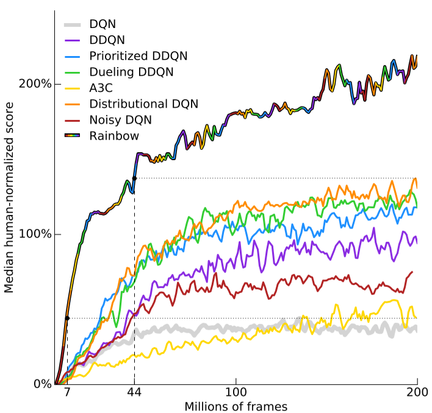
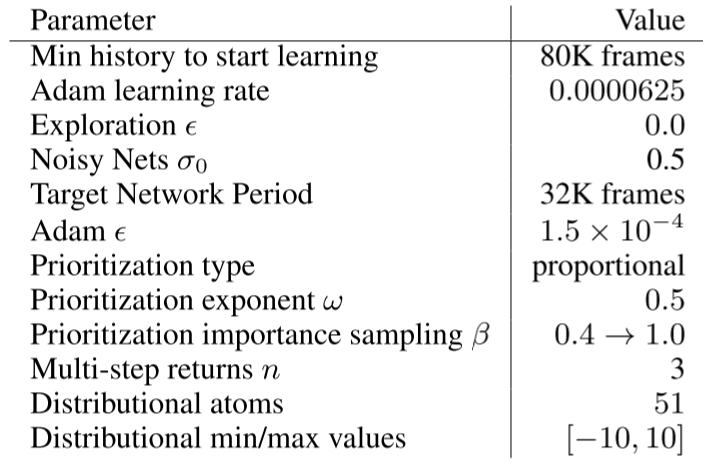
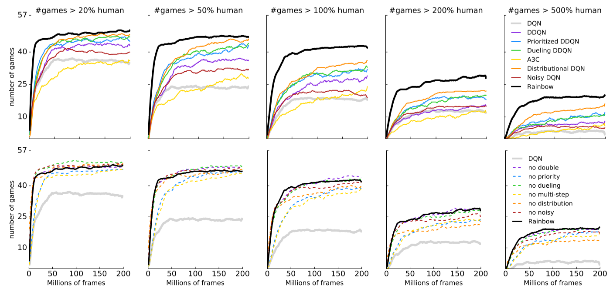
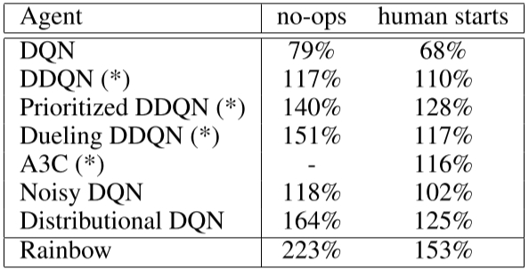
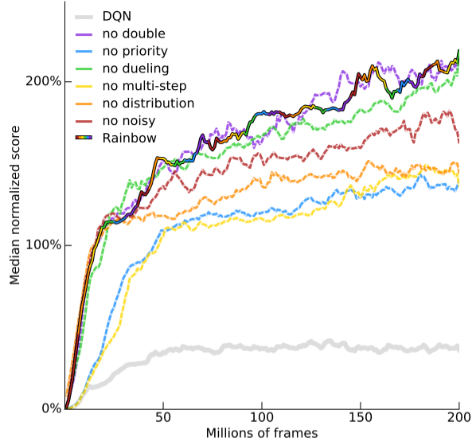
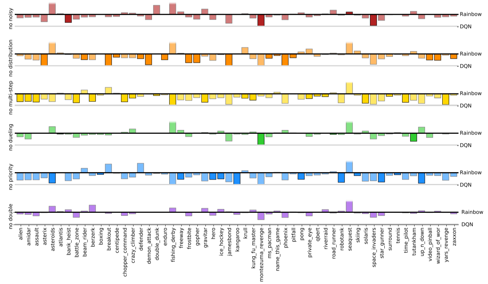

论文精读 Rainbow
Rainbow
Rainbow: Combining Improvements in Deep Reinforcement Learning
Rainbow: 结合深度强化学习的改进
论文地址：https://arxiv.org/abs/1710.02298
摘要
深度强化学习社区对DQN算法进行了几项独立改进。然而，尚不清楚这些扩展中的哪一个是互补的，并且可以有效地结合。本文研究了DQN算法的六个扩展，并实证研究了它们的组合。我们的实验表明，在数据效率和最终性能方面，该组合在雅达利2600基准上提供了最先进的性能。我们还提供了详细的消融研究结果，该研究显示了每个部件对整体性能的贡献。
Abstract
The deep reinforcement learning community has made several independent improvements to the DQN algorithm. However, it is unclear which of these extensions are complementary and can be fruitfully combined. This paper examines six extensions to the DQN algorithm and empirically studies their combination. Our experiments show that the combination provides state-of-the-art performance on the Atari 2600 benchmark, both in terms of data efficiency and final performance. We also provide results from a detailed ablation study that shows the contribution of each component to overall per-formance.
1.简介
最近在将强化学习（RL）扩展到复杂顺序决策问题方面取得的许多成功都是由深度Q网络算法（DQN；Mnih等人，20132015）开创的。DQN将Q学习与卷积神经网络和经验回放相结合，能够从原始像素中学习如何玩许多雅达利游戏。从那时起，人们提出了许多技巧，以提高其速度或稳定性。Double DQN（DDQN；van Hasselt、Guez和Silver 2016）通过解耦选择和评估引导动作，解决了Q学习的高估偏差问题（van Haselt 2010）。优先经验回放（Schaul，2015）通过更频繁地重放需要学习的内容，提高了数据效率。Dueling Network（Wang，2016）通过将最有动作价值分解为最优状态价值和最优优势， 有助于跨动作进行学习。从A3C中使用的多步TD（Sutton 1988；Sutton和Barto 1998）中学习（Mnih，2016），改变了偏差-方差权衡，有助于更快地将新获得到的奖励传播到较早访过的结点。分布Q学习（Bellemare、Dabney和Munos 2017）学习现有收益的分类分布，而不是估计平均值。Noisy DQN（Fortunato等人，2017）使用随机网络层进行探索。当然，这份清单还远远不够详尽。
这些算法中的每一个都能够单独实现显著的性能改进。由于它们是通过解决根本不同的问题来实现的，而且它们建立在同一个网络上，因此它们可以合理地结合在一起。在某些情况下，已经做到了这一点：Prioritized DDQN和 Dueling DDQN都使用 Double DQN，Dueling DDQN还与优先经验回放相结合。在本文中，我们建议研究一种结合上述所有技巧的方法。我们展示了如何整合这些不同的方法，并且它们实际上在很大程度上是互补的。事实上，他们的结合在Arcade Learning Environment（Bellemare et al.2013）的57款Atari 2600游戏的基准测试平台上，在效率和性能方面都取得了很好的结果。最后，我们展示了研究的结果，以帮助理解不同方法对性能和效率的贡献。

图1：57款雅达利游戏中人类正常化表现的中位数。我们将我们的集成智能体（Rainbow彩虹色）与DQN（灰色）和六个已发布的baseline进行了比较。请注意，我们在7M帧后达到了DQN的最佳性能，超过了44M帧内的任何基线，并达到了显著提高的最终性能。在5个点上使用移动平均值平滑曲线。
2.背景
强化学习解决了智能体在环境中行动以最大化标量奖励信号的问题。没有向智能体提供直接监督，例如，从未直接告知智能体最佳行动。
2.1智能体和环境
在每个离散时间步$t=0,1,2…$，环境向智能体提供当前状态$St$，智能体通过选择动作$A_t$进行行动，然后环境提供下一个奖励$R{t+1}$、折扣系数$\gamma{t+1}$和状态$S{t+1}$。这种交互被形式化为马尔可夫决策过程（MDP），即元组$
在智能体端，动作选择由策略$π$给出，策略$π$定义每个状态的动作概率分布。在t时刻，状态为$St$，我们定义折扣回报函数$G_t=\sum{k=0}^{\infty} \gammat^{(k)} R{t+k+1}$，为智能体计算未来奖励的折扣总和，其中，未来$k$步奖励的折扣由该时间之前的折扣乘积给出$\gammat^{(k)}=\Pi{i=1}^k \gamma_{t+i}$。智能体的目标是通过找到一个好的政策来最大化预期的折扣回报。
策略可以直接学习，也可以根据其他学习来构建。在基于价值的强化学习中，当从给定状态开始执行策略 $\pi$ 时，智能体可以获得预期折扣收益或价值的估计，$vπ(s)=Eπ[Gt|S_t=s]$，或状态动作价值函数$qπ(s，a)=E_\pi[G_t |S_t=s,A_t=a]$。从状态动作价值函数中导出新策略的常用方法是 $ \epsilon-greed
ly $方法。意味着以概率 $1-\epsilon$ 的概率取价值最高的动作，否则以 $\epsilon$ 的概率随机选取动作。这类策略用于引入一种探索形式：通过根据其当前估计随机选择次优行为，智能体可以在适当时发现并纠正其估计。主要的限制是，很难找到延伸到未来的替代行动方案；这激发了对更直接探索形式的研究。
2.2深度强化学习和DQN
对于过大的状态和动作空间，很难独立学习每个状态和动作对的Q值估计。在深度强化学习中，我们使用深度（即多层）神经网络表示智能体的各种组件，如策略$π(s,a)$或值$q(s,b)$。这些网络的参数通过梯度下降来训练，最小化损失函数。
在DQN（Mnih，2015）中，通过使用卷积神经网络来近似拟合给定状态$S_t$的动作值（以原始像素帧的形式作为输入送到神经网络），成功地将深度神经网络和强化学习相结合。在每个步骤中，智能体都会根据当前状态选择一个 $\epsilon - greedily$ 动作值，并将转换$(St, At, Rt+1, γt+1,St+1)$添加到经验回放缓冲区（Lin 1992），该缓冲区保存最后一百万个经验。采用随机梯度下降法对神经网络参数进行优化，最小化损失函数
其中t是从经验回放池中随机选取的时间步长。损失的梯度仅反向传播到策略网络的参数$θ$中（也用于选择动作）；$\overline θ$表示目标网络的参数；没有直接优化，而是从策略网络的定期复制参数。使用RMSprop（Tieleman和Hinton 2012），一种随机梯度下降的变体，对从经验回放池中的数据均匀采样，进行小批次梯度优化。这意味着，在上述损失中，时间索引t将是来自最后一百万次经验的随机时间索引，而不是当前时间。使用经验回放和目标网络可以相对稳定地学习Q值，并在几款雅达利游戏中获得超人的表现。
3.DQN扩展
DQN是一个重要的里程碑，但目前已知该算法的若干局限性，并提出了许多扩展。我们选择了六个扩展，每个扩展都解决了一个问题并提高了整体性能。为了保持选择的大小可管理，我们选择了一组解决不同问题的扩展（例如，只是众多解决探索中的一个）。
3.1 Double Q-learning
由于等式1中的最大化步骤，传统的Q学习受到高估偏差的影响，这可能会影响学习。Double Q-learning（van Hasselt 2010）通过解耦来解决这种高估，在原始DQN网络中最大化选择动作，在目标网络中评估动作的好坏。使用损失函数如下，可以将其与DQN（van Hasselt、Guez和Silver 2016）有效结合
这一变化被证明可以减少对DQN的有害高估，从而提高性能。
3.2 优先经验回放
DQN从经验回放池中均匀采样。理想情况下，我们希望更频繁地对那些需要学习错误的样本进行采样。作为学习的智能体，优先经验回放（Schaul et al.2015）以相对于上次遇到的绝对TD误差的概率$p_t$采样：
其中ω是决定分布形状的超参数。新的样本以最大优先级（权重）插入到重放缓冲区中，从而提供对最近样本的偏差。请注意，随机采样也可能是受欢迎的，即使在对它们的了解所剩无几的情况下。
3.3 Dueling网络
对决网络是为基于价值的强化学习神经网络架构。它具有两个计算输出，即状态价值输出和最优势输出，共享部分卷积层，并由一个特殊的聚合器合并（Wang，2016）。这对应于以下动作值的分解：
其中$ξ$、$η$和$ψ$分别是共享卷积层$fξ$、状态价值输出$vη$和优势输出$a_ψ$的参数；$θ={ξ，η，ψ}$是它们的连接。
3.4 多步TD
Q学习累积一个奖励，然后在下一步使用贪婪策略来自举更新动作。或者，可以使用前视多步目标（Sutton 1988）。我们将给定状态$S_t$的选择n步奖励定义为：
然后通过最小化损失来定义DQN的多步TD损失函数，
具有适当调整n的多步目标通常会导致更快的学习（Sutton和Barto 1998）。
3.5 分布式RL
我们可以学习近似收益的分布而不是预期收益。最近，Bellemare、Dabney和Munos（2017）提出将概率分布放置在离散的$z$上，对这种分布进行建模，其中$z$是带有$N{atoms} \in N^+$原子，定义为 $z^i=v{min}+(i-1)\frac{v{max}-v{min}}{N{atoms}-1}$，其中，$i \in {1,…, N{atoms}}$. 时间t处的近似分布$dt$是在该支持下定义的，每个原子i上的概率密度为$p^iθ(St, a_t)$，使得$d_t=(z, pθ(S_t, a_t))$。目标是更新θ，使该分布与实际收益分布紧密匹配。
要了解概率密度，关键是返回的分布满足Bellman方程的一个变体。对于给定状态$St$和动作$A_t$，最优策略$π^*$下的收益分布，应匹配通过下一状态$S{t+1}$的分布和动作$a^_{t+1}=\pi^(S{t+1})$定义的目标分布，根据折扣系数将其收敛，并根据奖励（或随机情况下的奖励分配）将计算奖励。然后，通过首先构建对目标分布，然后最小化分布$d_t$和目标分布之间的Kullbeck-Leibler发散，目标Q学习的分布变体$ d’_t=(R{t+1} + \gamma{t+1} z, p^-\theta(S{t+1}, \overline a^*{t_1})) $：
这里，$Φz$是目标分布在z上的L2范数，再状态$S{t+1}$， $a^∗{t+1}=\underset{a}{argmax~}qθ^-(S{t+1},a)$）是相对于平均值$q{\overline θ} = z^T p\theta(S{t+1},a)$更真实。
与不同分布情况一样，我们可以使用参数$\overline θ$的冻结副本来构建目标分布。参数化分布可以用神经网络表示，如在DQN中，但使用$N{atoms}×N{actions}$输出。softmax独立地应用于输出的每个动作维度，以确保每个动作的分布被适当地归一化。
3.6 噪声网络
探索使用的局限性$ \epsilon -greedy $ 策略在诸如《蒙特祖马的复仇》这样的游戏中是明确的，在游戏中必须执行许多动作才能获得第一笔奖励。Noisy Nets（Fortunato，2017）提出了一种噪声线性层，
其中，$\epsilon^b$和$\epsilon^w$是随机变量，$\odot$ 表示元素乘积。然后可以使用该变换来代替标准线性$y＝b+wx$。随着时间的推移，网络可以学会忽略噪声流，但会在状态空间的不同部分以不同的速率这样做，从而允许以自退火的形式进行状态条件探索。
4.集成智能体
在本文中，我们将上述所有组件集成到一个集成智能体中，我们称之为Rainbow。
首先，我们将1-step 分布损失（3）替换为多步变量。我们通过根据累积折扣收缩$S{t+n}$中的价值分布，并将其采样为截断的n步折扣收益来构建目标分布。这对应于将目标分布定义为$d^{(n)}_t = (R_t^{(n)} - \gamma_t^{(n)}z, p\theta^-(S{t+n}, a^*{t+n}))$，损失为：
其中，$Φz$是z的投影。
我们通过使用根据 在线网络 选择的$S{t+n}$中的贪婪动作$a^*{t+n}$作为目标动作，将多步分布损失与双Q学习相结合， 并使用目标网络评估这种动作。
在标准比例优先经验重放（Schaul et al.2015）中，绝对TD误差被用于确定采样的优先级。这可以在分布设置中使用平均作用值进行计算。然而，在我们的实验中，所有分布 Rainbow 变种都通过KL损失来优先考虑过渡，因为这是算法所最小化的：
作为优先权的KL损失可能对有噪声的随机环境更具鲁棒性，因为即使在收益不确定的情况下，损失也会继续减少。
网络结构是一种分布式Q函数和对决网络一起使用的结构。网络具有共享卷积层$fξ(s)$，然后输出$ N{atoms}
$维的状态价值$vη$和$ N{atoms}
$维的优势头$a\xi$，其中$a^iξ(f_ξ(s),a)$将表示对应于原子i和动作a的输出，对于每个原子$z_i$，如在对决DQN中一样，将价值流和优势流聚合，然后通过softmax层，以获得用于估计收益分布的归一化参数分布
其中$ \phi=f\xi(s) $, $\overline a^i\phi(s)=\frac{1}{N{actions}} \sum{a’} a^i_\psi(\phi, a’)$
然后，我们用等式（4）中描述的噪声等效物替换所有线性层。在这些噪声线性层中，我们使用因子化高斯噪声（Fortunato，2017）来减少独立噪声变量的数量。
5.实验方法
我们现在描述用于配置和评估集成智能体的方法和设置。
5.1 评估方法
我们评估了57款雅达利游戏中2600个智能体上的效果（Bellemare，2013）。我们遵循Mnih等人（2015）和van Hasselt等人（2016）的训练和评估程序。在训练期间，通过暂停学习并评估500K帧的最新智能体，在环境中每1M步评估智能体的平均分数。如van Hasselt等人（2016）所述，训练轮次在108K帧（或30分钟的模拟播放）时被截断。
智能体的得分在每场游戏中被标准化，因此0%对应于随机代理，100%对应于人类专家的平均得分。标准化分数可以在所有Atari级别上进行汇总，以比较不同代理的性能。跟踪所有游戏中人类正常化表现的中位数是很常见的。我们还考虑了智能体的表现高于人类表现的一小部分的游戏数量，以理解中位数的改进来自何处。人类正常化的平均表现可能信息量较小，因为它主要由一些游戏（如亚特兰蒂斯）主导，在这些游戏中，智能体的得分比人类高出几个数量级。
除了跟踪中值性能作为环境步骤的函数之外，在训练结束时，我们使用两种不同的测试方案重新评估最佳智能体。在无操作启动机制中，我们在每个轮次开始时插入一个随机数（最多30个）的无操作操作（正如我们在训练中所做的那样）。在人类开始游戏中，使用从人类专家轨迹的初始部分随机采样的点来初始化每个轮次初始值（Nair等人，2015）；这两种方法之间的差异表明，智能体在多大程度上对自己的轨迹过拟合。
由于空间限制，我们专注于游戏的总体结果。然而，在附录中，我们提供了所有游戏和所有智能体的完整学习曲线，以及无操作和人工启动测试制度中原始和标准化分数的详细对比表。
5.2 超参数调整
Rainbow的所有组件都有许多超参数。超参数的组合空间太大，无法进行穷举搜索，因此我们进行了有限的调整。对于每个组件，我们从介绍该组件的文章中使用的值开始，并通过手动坐标下降调整超参数中最敏感的参数。
DQN及其变体在前200K轮次期间不执行学习更新，以确保足够不相关的更新。我们发现，有了优先经验回放，可以在80K轮次后更快地开始学习。
DQN从探索开始$\epsilon$对应于随机均匀作用；它将前4M帧上的探测量退火到最终值0.1（在以后的变型中降低到0.01）。无论何时使用噪声的网络，我们都采取贪心策略（$\epsilon = 0$）， $σ_0$超参数的值为0.5，用于初始化噪声中的权重。对于没有噪声网络的智能体，我们使用$\epsilon - greedy$策略，但是降低探索速度比以前更快，在前250K帧中为0.01。
我们使用了Adam优化器（Kingma和Ba 2014），我们发现它对学习率的选择比RMSProp更不敏感。DQN使用$α=0.00025$的学习率。在所有Rainbow变体中，我们使用$α/4$的学习率，选自$｛α/2、α/4、α/6｝$，超参数Adam的值为$1.5×10^{-4}$。
对于优先级经验回放，我们使用推荐的比例变量，优先级指数$ω$为0.5，并在训练过程中将重要性采样指数$β$从0.4线性增加到1。比较${0.4、0.5、0.7}$的值，调整优先级指数$ω$。使用分布DQN的KL损失作为优先级，我们观察到性能对ω的选择非常稳健。
多步TD中n的值是Rainbow的一个敏感超参数。我们比较了n=1、3和5的值。我们观察到，n=3和5最初都表现得很好，但到最后，总体上n=3表现得最好。
超级参数（见表1）在所有57款游戏中都是相同的，即Rainbow智能体实际上是一个在所有游戏中都表现良好的单一智能体设置。
表1 Rainbow 超参数


图2：每一个图都显示了几个智能体的游戏数量，其中他们至少达到了人类性能的给定分数，作为时间的函数。从左到右，我们考虑20%、50%、100%、200%和500%的阈值。在第一行，我们将Rainbow与基线进行比较。在第二排，我们将Rainbow与它的消融进行了比较。
6.分析
在本节中，我们分析了主要的实验结果。首先，我们表明Rainbow比已发布的DQN变体更受欢迎。然后我们进行消融研究，比较几种不同的消融，每种消融都对应于从Rainbow中去除一种成分。
6.1 与已发布baseline的比较
在图1中，我们将Rainbow的表现（根据游戏中人类归一化得分的中位数来衡量）与A3C、DQN、DDQN、优先DDQN和对决DDQN的相应曲线进行了比较。我们感谢Dueling和Prioritized代理的作者提供了这些代理的学习曲线，并报告了我们自己对DQN、A3C、DDQN、Distributional DQN和Noisy DQN的重新运行。Rainbow的性能在数据效率和最终性能方面都明显优于任何基线。请注意，我们在7M帧后匹配了DQN的最终性能，在44M帧中超过了这些基线的最佳最终性能，并达到了显著改进的最终性能。
在对智能体的最终评估中，训练结束后，Rainbow在无操作制度下的中位数得分为223%；在人类起步阶段，我们测得的中位数为153%。在表2中，我们将这些分数与个别基线的公布中值分数进行了比较。
在图2（顶行）中，我们绘制了智能体达到人类标准化性能特定水平的游戏数量。从左到右，子图显示了不同代理实现了20%、50%、100%、200%和500%人类标准化性能的游戏数量。这使我们能够确定性能的总体改进来自何处。请注意，Rainbow和其他智能体之间的性能差距在各个级别的性能上都是显而易见的：Rainbow智能体正在提高基线智能体已经很好的游戏的分数，以及在基线智能体与人类性能相差很远的游戏中的分数。
6.2 学习速度
与最初的DQN设置一样，我们在单个GPU上运行每个智能体。匹配DQN最终性能所需的7M帧对应于不到10小时的时间。200M帧的完整运行对应于大约10天，并且在所有讨论的变体之间，这一变化小于20%。文献中包含了许多可替代的训练设置，它们通过利用并行性来提高作为挂钟时间函数的性能，例如，Nair（2015）、Salimans（2017）和Mnih（2016）。在如此不同的硬件/计算资源之间正确地关联性能是非常重要的，因此我们只关注算法变化。虽然我们认为它们是重要的和互补的，但我们将可伸缩性和并行性的问题留给未来的工作。
表2：Rainbow和基线的最佳智能体的中位数标准化分数。对于标有星号的方法，分数来自相应的论文。DQN的分数来自对决网络的论文，因为DQN论文没有报告所有57场比赛的分数。其他分数来自我们自己的实现。


图3：57款雅达利游戏中人类正常化表现的中位数，作为时间的函数。我们将我们的集成智能体（彩虹色）与DQN（灰色）和六种不同的消融（虚线）进行比较。在5个点上使用移动平均值平滑曲线。
6.3 消融研究
由于Rainbow将几个不同的想法集成到一个智能体中，我们进行了额外的实验，以了解在这种特定组合的背景下，各个组件的贡献。
为了更好地了解每个成分对Rainbow的贡献，我们进行了消融研究。在每次消融中，我们从完整的Rainbow组合中移除一个组件。图3显示了完整Rainbow和六种消融变体的中位数标准化评分的比较。图2（下一行）显示了这些消融如何相对于人类标准化性能的不同阈值进行的更详细的细分，图4显示了每个游戏中每次消融的增益或损失，在整个学习过程中的平均值。
优先经验回放和多步TD是Rainbow最关键的两个组成部分，因为删除其中一个组成部分会导致中位数的大幅下降。毫不奇怪，这两个因素的移除都会影响早期表现。也许更令人惊讶的是，取消多步TD也会影响最终成绩。放大单个游戏（图4），我们看到两个组件在整个游戏中的帮助几乎是一致的（在57场游戏中，完整的彩虹在53场游戏中的表现优于消融）。
分布Q学习在与智能体性能相关的100%之前的技术中排名靠后。值得注意的是，在早期学习中，没有明显的差异，如图3所示，在最初的4000万帧中，分布消融与完全消融效果一样好。然而，如果没有分布Q学习，智能体的性能就会开始落后。当结果与图2中的人类表现相分离时，我们发现分布消融主要似乎滞后于高于人类水平或接近人类水平的游戏。
就中位数表现而言，包括噪声网络时，智能体表现更好；当这些被移除并且探索使用传统的 $\epsilon - greedy$ 策略，总体性能较差（图3中的红线）。虽然移除“噪声网络”导致几场游戏的成绩大幅下降，但在其他游戏中也有小幅上升（图4）。
总的来说，当从完整的Rainbow中移除对决网络时，我们没有观察到显著的差异。然而，如图4所示，中位数分数掩盖了对决网络的影响在不同游戏之间存在差异的事实。图2显示，对决网络可能在高于人类表现水平的游戏（#games\>200%）上有所改善，而在低于人类表现的游戏（#games\>20%）上有所下降。
同样，在双Q学习的情况下，观察到的中位性能差异（图3）是有限的，根据游戏的不同，组件有时会导致性能下降或帮助（图4）。为了进一步研究双重Q 学习的作用，我们将我们训练过的智能体的预测与根据折扣奖励计算的实际折扣回报进行了比较。将Rainbow与双Q学习被消融的智能体进行比较，我们发现实际回报通常高于10，因此不在分布的支持范围内，从−10到+10。这导致回报被低估，而不是高估。我们假设，将值限制在这个限制范围内可以抵消Q学习的高估偏差。然而，请注意，如果分布的支持扩大，双Q学习的重要性可能会增加。
在附录中，我们展示了每个游戏的最终表现和Rainbow的学习曲线、消融和基线。

图4：所有57款雅达利游戏中消融的性能下降。性能是学习曲线下的区域，相对于Rainbow智能体和DQN进行标准化。DQN表现优于Rainbow的两个游戏被省略。每场比赛都会突出显示导致最强跌落的消融。取消优先级或多步TD会降低大多数游戏的性能，但每个组件的贡献因游戏而异。
7.讨论
我们已经证明，DQN的若干改进可以成功地集成到单个学习算法中，从而实现最先进的性能。此外，我们已经表明，在集成算法中，除了一个组件之外，所有组件都提供了明显的性能优势。还有许多我们无法包含的算法组件，这将是集成智能体进一步实验的有希望的候选。在众多可能的候选人中，我们将在下面讨论几个。
我们在这里关注的是Q学习家族中基于价值的方法。我们没有考虑纯粹基于策略的RL算法，如信任区域策略优化（Schulman，2015），也没有考虑行actor-critic方法（Mnih，2016；O’Donoghue，2016）。
许多算法利用数据序列来提高学习效率。最优收紧（He et al.2016）使用多步收益来构建额外的不等式边界，而不是使用它们来代替Q学习中使用的1步目标。跟踪允许n步回报的软组合（Sutton 1988）。然而，与Rainbow中使用的多步目标相比，顺序方法在每个梯度上都利用了更多的计算。此外，引入优先序列重放提出了如何存储、重放和优先序列的问题。
偶发控制（Blundell，2016）也关注数据效率，并显示在某些领域非常有效。它通过使用情景记忆作为补充学习系统来改善早期学习，能够立即重演成功的动作序列。
除了Noisy Nets，许多其他探索方法也可能是有用的算法成分：在这些Bootstrapped DQN（Osband等人2016）、内在动机（Stadie、Levine和Abbeel 2015）和基于计数的探索（Bellemare等人2016）中。这些替代组件的集成是进一步研究的富有成果的课题。
在本文中，我们专注于学习更新，而没有探索其他计算架构。在A3C（Mnih等人，2016）、Gorila（Nair等人，2015）或Evolution Strategies（Salimans等人，2017）中，从环境的并行副本进行异步学习可以有效地加速学习，至少在时间方面是如此。然而，请注意，它们的数据效率可能较低。
分层RL也成功地应用于几个复杂的雅达利游戏。在HRL的成功应用中，我们重点介绍了h-DQN（Kulkarni等人，2016a）和Feudal Networks（Vezhnevets等人，2017）。
通过利用辅助任务，如像素控制或特征控制（Jaderberg et al.2016）、监督预测（Dosovitskiy and Koltun 2016）或后续特征（Kulkarni et al.2016b），状态表示也可以变得更有效。
为了根据基线公平地评估Rainbow，我们遵循了折扣奖励、固定动作重复和帧堆叠的常见领域修改，但这些可能会被其他学习算法改进所消除。波普艺术规范化（van Hasselt et al.2016）允许删除奖励这苦，同时保持类似的表现水平。细粒度动作重复（Sharma、Lakshminarayanan和Ravindran 2017）能够学习如何重复动作。循环状态网络（Hausknecht and Stone 2015）可以学习时间状态表示，取代观测帧的固定堆栈。总的来说，我们认为将真实游戏暴露给智能体是未来研究的一个有希望的方向。